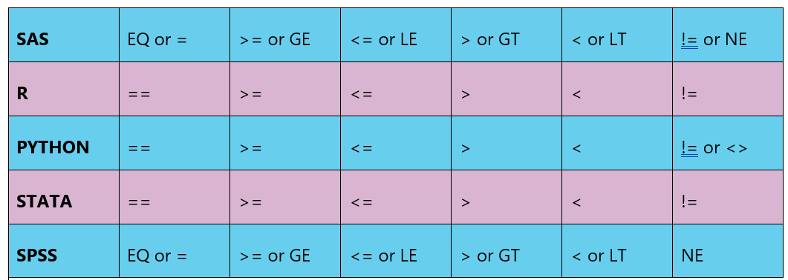

Chapter 5 Data Management

“You can have a ridiculously enormous and complex data set, but if you have the right tools and methodology then it’s not a problem.” –– Aaron Koblin
5.1 Overview
You have learned the basic steps for using your statistical software program and have begun to examine each of your variables through the process of exploratory data analysis. By generating frequency tables, you were able to describe the pattern of responses for each variable. Now we will use these frequency distributions (along with your personal code book) to make additional decisions regarding the organization of each of your variables.
Data management is the process of organizing and recoding your data in order to help you answer your research question. The number and types of decisions you will need to make will depend on the variables that you have selected.
5.2 Lesson
Learn what types of response categories need to be set to missing. Consider if you need to logically recode response options to assist in interpreting your results. See how to collapse a quantitative variable into categories or an already categorical variable into fewer categories.
Create secondary variables combining two or more variables using logic statements. Learn how to create a quantitative variable from multiple categorical variables. Begin to think about how these different data management steps might help you best answer your research question. Click on a video lesson below.
SAS – R – Python – Stata – SPSS
5.3 Syntax
5.3.1 basic operations

5.3.2 need to identify missing data
Often, you must define the response categories that represent missing data. For example, if the number 9 is used to represent a missing value, you must either designate in your program that this value represents missingness or else you must recode the variable into a missing data character that your statistical software will recognize. If you do not, the 9 will be treated as a real/meaningful value and will be included in each of your analyses.
SAS
if VAR1=9 then
VAR1=.;R
myData$VAR1[myData$VAR1 == 9 ] <- NAPython
myData['VAR1']=myData['VAR1'].replace(9, numpy.nan)STATA
replace VAR1=. if VAR1==9SPSS
RECODE var1 (9=SYSMIS).5.3.3 recoding based on skip patterns
There are a number of skip patterns in some data sets. For example, if we ask someone whether or not they have ever used marijuana, and they say “no,” it would not make sense to ask them more detailed questions about their marijuana use (e.g. quantity, frequency, onset, impairment, etc.). When analyzing more detailed questions regarding marijuana (e.g. have you ever smoked marijuana daily for a month or more?), those individuals that never used the substance may show up as missing data (often designated “legitimate skip”). Since they have never used marijuana, we can assume that their answer is “no,” they have never smoked marijuana daily. This would need to be explicitly recoded. Note that we commonly code a no as 0 and a yes as 1.
SAS
if VAR1=. then
VAR1=0;R
myData$VAR1[is.na(myData$VAR1)] <- 0Python
myData['VAR1'].fillna(0, inplace=True)STATA
replace VAR1=. if VAR1==9SPSS
RECODE VAR1 (SYSMIS=0).5.3.4 string variable to numeric variable
It is important when preparing to run statistical analyses that all variables have response categories that are numeric rather than “string” or “character.” All variables with string or character responses must therefore be recoded into numeric values. These numeric values are known as dummy codes in that they carry no direct numeric meaning.
SAS
if tree='Maple' then
tree_new=1;
else if tree='Oak' then
tree_new=2;R Not necessary in R
Python
def TREE_N (row) :
if row['TREE'] == 'Maple' :
return 1
if row['TREE'] == 'Oak' :
return 2
myData['TREE_N'] = myData.apply(lambda row: TREE_N (row), axis = 1)STATA
generate TREE_N=.
replace TREE_N=1 if TREE=="Maple"
replace TREE_N=2 if TREE=="Oak"
OR by using the encode command
encode TREE, gen(TREE_N)SPSS
RECODE TREE ('Maple'=1) ('Oak'=2) INTO TREE_N.5.3.5 collapsing response categories
If a variable has many response categories, it can be difficult to interpret the statistical analyses in which it is used. Alternatively, there may be too few subjects or observations identified by one or more response categories to allow for a successful analysis. In these cases, you would need to collapse across categories.
For example, if you have the following categories for geographic region, you may want to collapse some of these categories:
Region: New England=1, Middle Atlantic=2, East North Central=3, West North Central=4, South Atlantic=5, East South Central=6, West South Central=7, Mountain=8, Pacific=9.
New_Region: East=1, West=2.
SAS
if region=1 or region=2 or region=3 or region=5 or region=6 then
new_region=1;
else if region=4 or region=7 or region=8 or region=9 then
new_region=2;R
myData$new_region[myData$region == 1 | myData$region == 2 | myData$region == 3 | myData$region == 5 | myData$region == 6] <- 1
myData$new_region[myData$region == 4 | myData$region == 7 | myData$region == 8 | myData$region == 9] <-2Python
def new_region (row) : if row['region'] == 1 or row['region'] == 2 or row['region'] == 3 or row['region'] row['region'] ==5 or row['region'] == 6 : return 1
elif row['region'] == 4 or row['region'] == 7 or row['region'] == 7 or row['region'] row['region']== 8 or row['region'] == 9 :
return 2
myData['new_region'] = myData.apply(lambda row: new_region (row), axis=1)STATA
generate new_region = 2
replace new_region=1 if region==1 | region==2 | region==3 | region==5 | region==6SPSS
COMPUTE new_region=2.
IF (region=1 | region=2 | region=3 | region=5 | region=6) new_region=1.5.3.6 aggregating across variables
In many cases, you will want to combine multiple variables into one. For example, while NESARC measures several individual anxiety disorders, I may be interested in anxiety more generally. In this case I would create a general anxiety variable in which those individuals who received a diagnosis of social phobia, generalized anxiety disorder, specific phobia, panic disorder, agoraphobia, or obsessive-compulsive disorder would be coded “yes” and those who were free from all of these diagnoses would be coded “no.”
SAS
if socphob=1 or gad=1 or specphob=1 or panic=1 or agora=1 or ocd=1 then
anxiety=1;
else
anxiety=0;R
myData$anxiety <- rep(0, nrow(myData))
myData$anxiety[myData$socphob == 1 | myData$gad==1 |
myData$panic == 1 | myData$agora==1 |
myData$ocd == 1] <- 1
myData$anxiety[is.na(myData$socphob) & is.na(myData$gad) &
is.na(myData$panic) & is.na(myData$agora) &
is.na(myData$ocd)] <- NAPython
def anxiety (row) :
if row['socphob'] == 1 or row['gad'] == 1 or row['panic'] == 1
or row['agora'] == 1 or row['ocd'] == 1 :
return 1
else :
return 0
myData['anxiety'] = data.apply(lambda row: anxiety (row), axis = 1)STATA
gen anxiety=1 if socphob==1 | gad==1 | specphob==1 | panic==1 | agora==1 | ocd==1
replace anxiety=0 if anxiety==.SPSS
IF (socphob=1 | gad=1 | specphob=1 | panic=1 | agora=1 | ocd=1)
anxiety=1.
RECODE anxiety (SYSMIS=0).5.3.7 Create a quantitative variable
If you are working with a number of items that represent a single construct, it may be useful to create a composite variable/score. For example, I want to use a list of nicotine dependence symptoms meant to address the presence or absence of nicotine dependence (e.g. tolerance, withdrawal, craving, etc.). Rather than using individual binary variables (i.e. nicotine dependence present or absent), I want to examine the construct as a dimensional scale (i.e. number of nicotine dependence symptoms). In this case, I would want to recode each symptom variable so that yes=1 and no=0 and then sum the items so that they represent one composite score (i.e. the number of nicotine dependence symptoms endorsed).
SAS
nd_sum=sum (of nd_symptom1 nd_symptom2 nd_symptom3 nd_symptom4);R
myData$nd_sum <- myData$nd_symptom1 +myData$nd_symptom2 +
myData$nd_symptom3 + myData$nd_symptom4Python
myData['nd_sum'] = myData['nd_symptom1'] +
myData['nd_symptom2'] + myData['nd_symptom3'] +
myData['nd_symptom4']STATA
egen nd_sum=rsum(nd_symptom1 nd_symptom2 nd_symptom3 nd_symptom4)SPSS
COMPUTE nd_sum=sum(nd_symptom1 nd_symptom2 nd_symptom3 nd_symptom4).5.3.8 labeling variables
Given the often-cryptic names that variables are given, it can sometimes be useful to label them.
SAS
label VAR1='label';R For frequency tables:
library (Hmisc)
label(myData$VAR1) <- "label"Python Not needed in Python
STATA
label variable VAR1 "label"SPSS
VARIABLE LABELS VAR1 'label'.5.3.9 renaming variables
Given the often-cryptic names that variables are given, it can be useful to give a variable a new name (something that is easier for you to remember and recognize).
SAS
rename VAR1=newvarname;R
names(myData)[names(myData)== "VAR1"] <- "newvarname"Python
myData = myData.rename(index=str, columns={"VAR1":
"newvarname"})STATA
rename VAR1 newvarnameSPSS
COMPUTE newvarname=VAR1.5.3.10 labeling variable responses/values
Given that nominal and ordinal variables have, or are given numeric response values (i.e. dummy codes), it can be useful to label those values so that the labels are displayed in your output.
SAS Set up format before the data step.
proc format;
value formatname 0="value0label" 1="value1label" 2="value2label"
3="value3label";Within the data step, tell SAS which variables you would like to format.
format VAR1 formatname.;R Because the function doesn’t name the existing levels, make sure you have them all in the right order.
levels(myData$VAR1)
levels(myData$VAR1) <- c("value0label", "value1label",
"value2label", "value3label")Python Because the function doesn’t name the existing levels, make sure you have them all in the right order.
myData['VAR1']= myData['VAR1']..astype('category')
myData['VAR1']=
myData['VAR1'].cat.rename_categories(["value0label",
"value1label", "value2label", "value3label"])STATA
label define LABELname1 0 "value0label" 1 "value1label" 2
"value2label" 3 "value3label"
label values VAR1 LABELname1SPSS
VALUE LABELS VAR1 0 'value0label' 1 'value1label' 2
'value2label' 3 'value3label'.5.3.11 sample subset
When using large data sets, it is often necessary to subset the data so that you are including only those observations that can assist in answering your particular research question. In these cases, you may want to select your own sample from within the survey’s sampling frame. For example, if you are interested in identifying demographic predictors of depression among Type II diabetes patients, you would plan to subset the data to subjects endorsing Type II Diabetes.
SAS Put at the end of the data step.
if diabetes2=1; R
title_of_subsetted_data <- myData[myData$diabetes2 == 1, ]Python
title_of_subsetted_data = myData[myData.diabetes2 == 1]STATA Put this after the command.
if diabetes2==1SPSS Must add as command option.
/SELECT=diabetes2 EQ 15.3.12 comparison groups
Often, you will need to create groups for the purpose of making comparisons. It is important to be certain that the groups that you would like to compare are of adequate size and number. For example, if you were interested in comparing complications of depression in parents who had lost a child through miscarriage vs. parents who had lost a child in the first year of life, it would be important to have large enough groups of each. It would not be appropriate to attempt to compare 5000 observations in the miscarriage group to only 5 observations in the first-year group.
5.4 Assignment
Submit the program that manages your data and the results that display your data managed variables as frequency tables. Describe the steps that you took in managing your data and write a few sentences that describe what you see in the frequency tables of your managed variables.